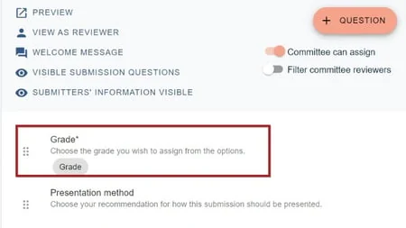
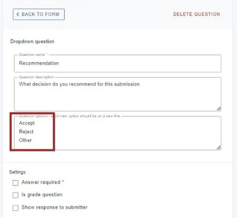
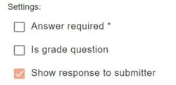

Tips on designing your reviewing form
For event organisersNot an organiser?
The review form templates are designed to be very flexible but in order to collect the information you need and to make the reviewing process simple, there are a few things that you should consider when designing your form#
submitter, reviewer, delegate etc), please click here .
Reviewer guidelines / scoring criteria
Reviewer guidelines are an important part of the reviewing process. In order for reviewers to be able to do their job, they should be made aware of what they are assessing, and how to assess it. They should be given some background information, context about the cohort, and also be clear about any grade / scoring criteria, and whether their reviews will be available to the submitter, committee, admins or all three.
You can do this in a number of ways
- Attach a document to the reviewers email, when notifying them of their assigned submissions
- You can create this in your welcome message, which allows for links, tables and images, which should allow you to provide all the information you need.
- You can also add a text block question which will be visible in the review form.
Declarations
Sometimes, a reviewer may need to add some information to the review form that is aimed at the administrator, eg, if the abstract they are asked to review is on a topic outside of their expertise.
If this is the case, create a text input question and ensure that you don't enable theShow response to submitters tag .
Grades
There is only one type of question that will collect grades in the system and it is the first one on the default review form.

When setting the grades, ensure you create the appropriate scales for your reviewers. It is important that your reviewers have the necessary space and tools to adequately convey their feedback and opinion on submissions.
For example:
Is 5 (excellent), 4 (good), 3 (average), 2 (poor) and 1 (reject) adequate? Or should you create a wider scale - from 10 (excellent) all the way down to 1 (reject)?
You can have as many grade questions as you require. Sometimes, this is necessary if you wish to allow grading for different aspects of each submission - eg. style, methodology, conclusion etc. The system will automatically create averages of all grade questions so you have the data you need to make decisions.
If you do create multiple grade questions:
- Do you need to weight some of the grade questions - ie - is the grade assigned to the methodology more important than the conclusion? If so, the best way of handling this would be to assign higher values to the methodology question - ie instead of 1-5, enter 2-10 instead, so this would double the weighting of the methodology question responses.
- Do you need to create comment questions for each of the grade questions? If so, should these be mandatory?
Providing recommendations
Would you like your reviewers to give a recommendation on the presentation method, or whether a submission should be accepted or rejected? There is a 'presentation method' question set up in the default form but if you would like the reviewer to recommend the decision, you will need to create a dropdown question.

With all dropdown questions, it is advised that you always add 'other' as an option, then follow this up with a text question so that reviewers can enter the 'other' option.
Showing reviews to submitters
If you decide that you would like to show the reviews to submitters, there is guidance here.
You can select which of the review questions that you would like submitters to see the response to, by checking the box at the end of each question (shown below) so be aware that anything entered by your reviewers will be seen by the submitters in each case.

Not all of the above are an essential part of creating your review form, but it helps to have given the preparation some thought in order to ensure you are collecting the information you need.
Did this page solve it?
Thanks — this helps us fix it.
Didn't solve it? Ask our support team
No question is too small, and there's no charge for asking. Raise a ticket and someone who knows the software will pick it up.